01
Stabilisation de talus et de sols
Maintien des talus et prévention des glissements de terrain au bord des routes et des autoroutes, y compris sur les zones à forte pente.

Notre innovation pour la stabilisation des talus et des sols.
Un système de blocs en béton à verrouillage, conçu pour stabiliser les sols au bord des routes et des autoroutes.
STABLOT est une solution technique par blocs en béton : un système de verrouillage sans erreur, conçu pour la stabilisation des glissements des sols au bord des routes et des autoroutes.
Robuste et solide, il résiste aux poussées horizontales et verticales en haut et en bas de talus. Il régularise les différences d’élévation des zones à forte pente.
Les blocs se posent facilement, ce qui fait gagner du temps et de l’argent. Le rendu est très esthétique, l’ouvrage prévient l’érosion, respecte l’intégrité de la nature et ne nécessite aucun entretien.
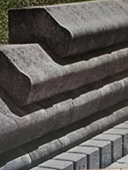
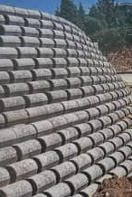
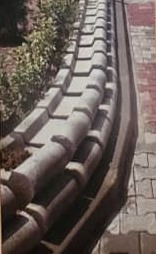
Maintien des talus et prévention des glissements de terrain au bord des routes et des autoroutes, y compris sur les zones à forte pente.
Aménagements esthétiques et durables :
Les blocs sont posés en gradins, appuyés sur le talus. De la fondation jusqu’au remblai, l’ouvrage comprend :
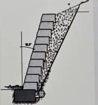
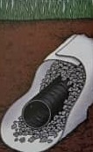
| Désignation | Longueur | Hauteur | Largeur | Poids | Conditionnement |
|---|---|---|---|---|---|
| STABLOT 20 | 38 | 20 | 20 | 23 | 22 pièces |
| STABLOT 25 | 38 | 20 | 25 | – | – |
| STABLOT 30 | 38 | 20 | 30 | – | – |
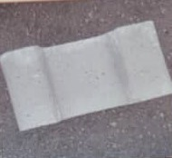
Qualité et caractéristiques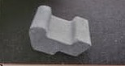
Blanc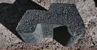
Gris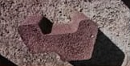
Rouge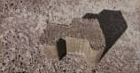
Beige
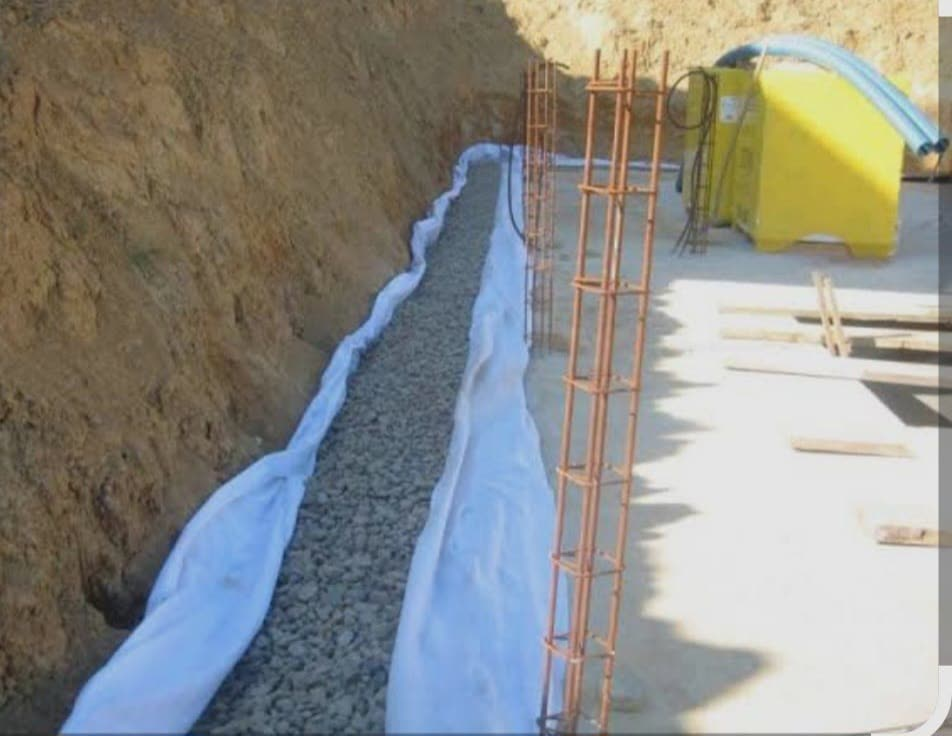
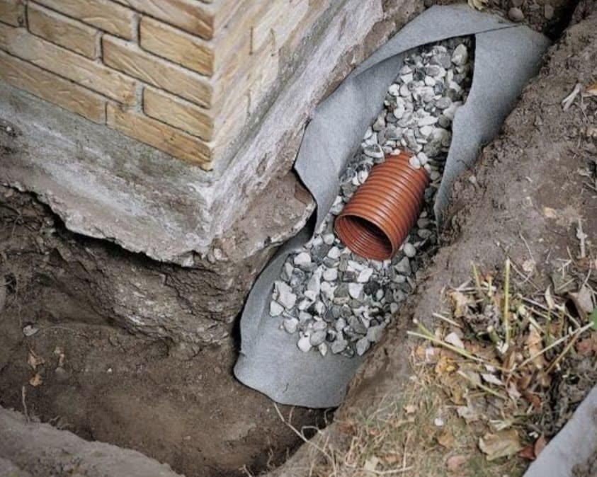
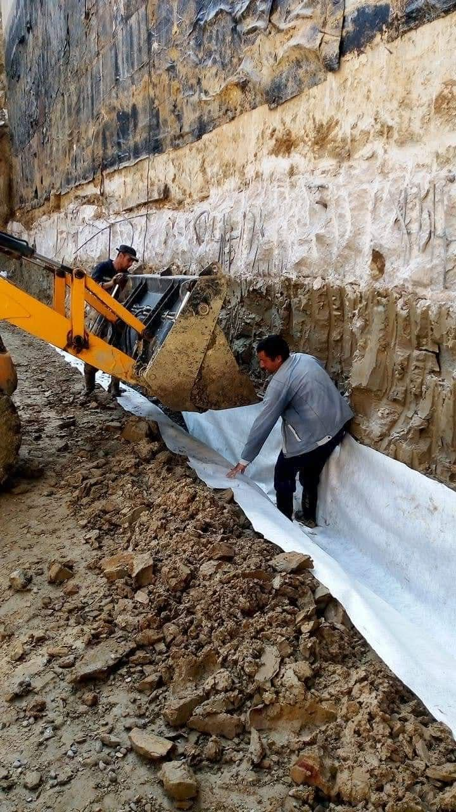
Parlez-nous de votre projet : nous vous conseillons sur le modèle STABLOT et la mise en œuvre adaptés.